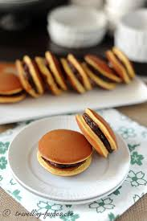

Sushi
Sushi is one of the most popular Japanaese foods. It is made of rice, seaweed, and raw fish. The combination is amazing.
Ramen
Ramen is my favorite type of food and there are many different flavors that you can try. It is a must try food!
Tempura
Tempura is a very simple food that consists or shrimp dipped in batter. Even so, it is delicious. You will end up eating 10 of them!
Takoyaki
Takoyaki sounds like a taco but it is very different. It takes form in a ball and is made of batter and octopus. It is then fried and the final product is literal heaven.
Chawanmushi
Even though it is hard to pronounce, Chawanmushi is sort of like a pudding, but it is an egg custard dish originating from Japan. Delicious.
Mochi
Mochi is definitely a favorite dessert eveyrhwere. It is sweet and can be filled with ice cream, red bean, or many other flavors.

Dorayaki
This is another very popular dessert. It is popular from a show called Doraemon. It is basically a pancake with red bean filling in between.
Raindrop cake
This is a very peculiar looking dessert because it is clear. It is very hard to make and decorations can be made inside the cake.
Places to visit in the United States.
Japan is country full of beautiful places to visit. The first place to visit would be Mount Fuji. It is truly a sight to see.
Next, you can visit Tokyo which is considered the modern heart of Japan. There you can find skyscrapers and many fun activities to do.
Hitsujiyama Park is a must! The scenery is unbelievable and it is great for mind cleansing.
Kawachi Fuji Garden in Fukuoka is another must visit place. The nature is absoluteyl stunning and perfecct for pictures!
When you have the chance, make sure that you check out any festivals around such as the well known cherry blossom festivals.
There are many many other places that will amaze you, but being Japan itself is already an amazing experience.